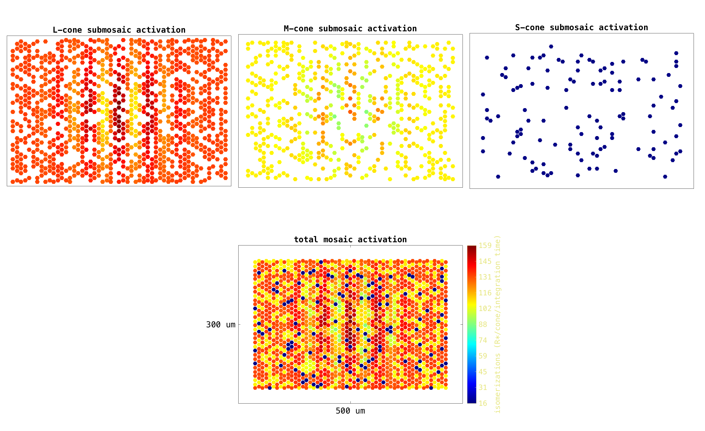
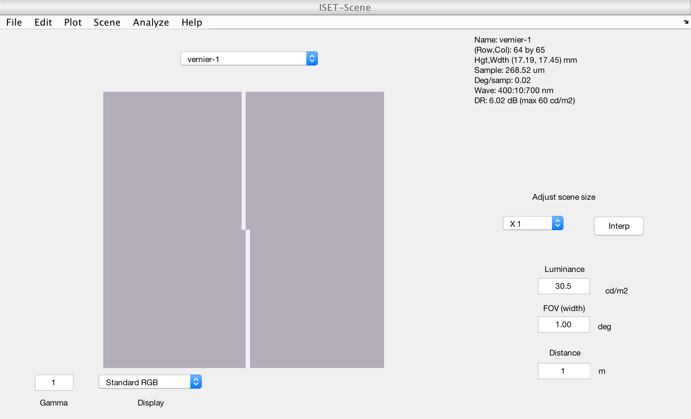
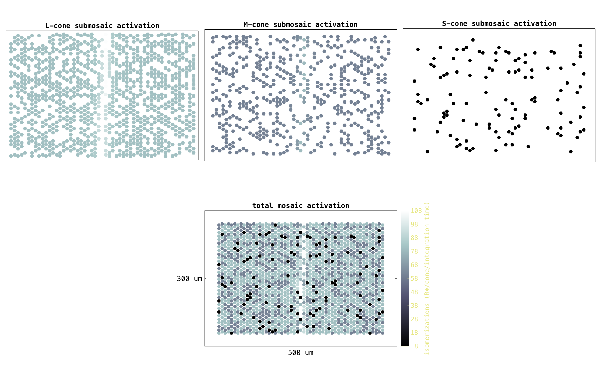
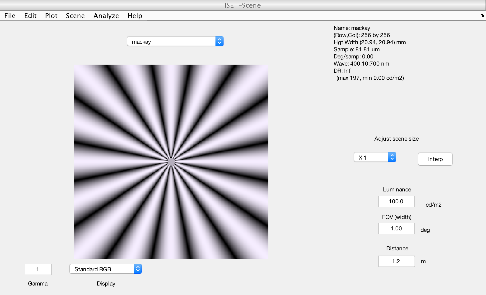
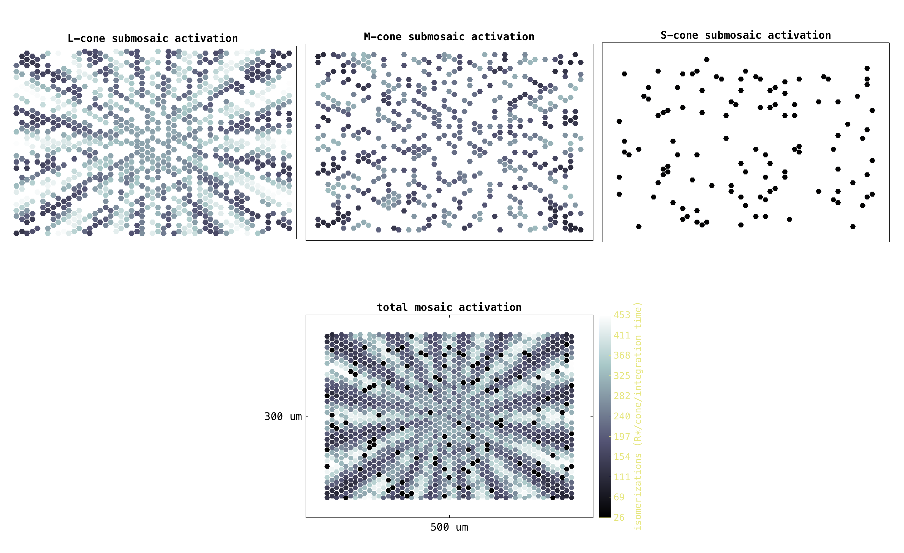

t_coneMosaicHex4
Computes hex mosaic isomerization maps for an achromatic Gabor scene and for the Vernier scene and illustrates coneMosaicHex's own method for mosaic activation visualization.
NPC, ISETBIO Team, Copyright 2016
Contents
Initialize
ieInit; clear; close all; % Interactive mode. Set to true to have it pause at useful places. % Default is false so we can autopublish without user input interactiveMode = false; % Freeze rng rng('default'); rng(219347); % Generate a hex mosaic with a medium resamplingFactor mosaicParams = struct(... 'resamplingFactor', 9, ... % controls the accuracy of the hex mosaic grid 'spatiallyVaryingConeDensity', false, ... % whether to have an eccentricity based, spatially - varying density 'centerInMM', [0.5 0.3], ... % mosaic eccentricity 'spatialDensity', [0 0.62 0.31 0.07],... 'noiseFlag', 'none' ... ); theHexMosaic = coneMosaicHex(... mosaicParams.resamplingFactor, ... mosaicParams.spatiallyVaryingConeDensity, ... 'center', mosaicParams.centerInMM*1e-3, ... 'spatialDensity', mosaicParams.spatialDensity, ... 'noiseFlag', mosaicParams.noiseFlag ... ); % Set the mosaic's FOV to a wide aspect ratio theHexMosaic.setSizeToFOVForHexMosaic([0.9 0.6]); theHexMosaic.displayInfo();
Resampling grid. Please wait ... Done !
Resampling grid. Please wait ... Done !
Mosaic info:
Size (microns): 274.1 (w) x 180.9 (h)
FOV (deg): 0.92 (w) x 0.61 (h)
Grid resampling factor: 9
Cone aperture (microns): 5.48 (w) x 5.48 (h)
Rectangular grid: 49 cols x 33 rows
Resampled grid: 450 cols x 297 rows
Total cones: 133650
Active cones: 1643
Cone density (all cones): 2695433.5 cones/mm^2
Cone density (active cones): 33135.8 cones/mm^2
Unit test 1: achromatic Gabor scene
[dirName,~] = fileparts(which(mfilename())); load(fullfile(dirName,'GaborAchromScene.mat')) gaborScene = sceneSet(gaborScene,'fov', 1.0); % Compute the optical image oi = oiCreate; oi = oiCompute(gaborScene,oi); % Compute isomerizations tic fprintf('\nComputing isomerizations ...'); isomerizationsGabor = theHexMosaic.compute(oi,'currentFlag',false); fprintf('Isomerization computation took %2.1f seconds\n', toc);
Computing isomerizations ...Isomerization computation took 0.0 seconds
Display isomerizations using coneMosaicHex's own
mosaic activation visualization method
tic fprintf('\nVisualizing responses ... '); theHexMosaic.visualizeActivationMaps(... isomerizationsGabor, ... % the response matrix 'mapType', 'modulated hexagons', ... % how to display cones: choose between 'density plot', 'modulated disks' and 'modulated hexagons' 'signalName', 'isomerizations (R*/cone/integration time)', ... % colormap title (signal name and units) 'colorMap', jet(1024), ... % colormap to use for displaying activation level 'figureSize', [1550 950] ... % figure size in pixels ); fprintf('Isomerization visualization took %2.1f seconds\n', toc);
Visualizing responses ... Isomerization visualization took 0.7 seconds
Unit test 2: Vernier scene
if (interactiveMode) commandwindow fprintf('\n<strong>Hit enter to visualize the hex mosaic activation maps for the vernier scene. </strong>'); pause end % Generate the vernier scene scene = sceneCreate('vernier'); scene.distance = 1; scene = sceneSet(scene,'fov', 1.0); vcAddObject(scene); sceneWindow % Compute the optical image oi = oiCreate; oi = oiCompute(scene,oi); % Compute isomerizations for both mosaics isomerizationsVernier = theHexMosaic.compute(oi,'currentFlag',false); fprintf('\nVisualizing responses ... '); theHexMosaic.visualizeActivationMaps(... isomerizationsVernier, ... % the response matrix 'mapType', 'modulated hexagons', ... % how to display cones: choose between 'density plot', 'modulated disks' and 'modulated hexagons' 'signalName', 'isomerizations (R*/cone/integration time)', ... % colormap title (signal name and units) 'colorMap', bone(1024), ... % colormap to use for displaying activation level 'figureSize', [1550 950] ... % figure size in pixels ); fprintf('Isomerization visualization took %2.1f seconds\n', toc);
Visualizing responses ... Isomerization visualization took 3.0 seconds 
Unit test 3: Rays scene
if (interactiveMode) commandwindow fprintf('\n<strong>Hit enter to visualize the hex mosaic activation maps for the rays scene. </strong>'); pause end % Generate ring rays stimulus scene = sceneCreate('rings rays'); scene = sceneSet(scene,'fov', 1.0); vcAddObject(scene); sceneWindow % Compute the optical image oi = oiCreate; oi = oiCompute(scene,oi); % Compute isomerizations for both mosaics isomerizationsRays = theHexMosaic.compute(oi,'currentFlag',false); fprintf('\nVisualizing responses ... '); theHexMosaic.visualizeActivationMaps(... isomerizationsRays, ... % the response matrix 'mapType', 'modulated hexagons', ... % how to display cones: choose between 'density plot', 'modulated disks' and 'modulated hexagons' 'signalName', 'isomerizations (R*/cone/integration time)', ... % colormap title (signal name and units) 'colorMap', bone(1024), ... % colormap to use for displaying activation level 'figureSize', [1550 950] ... % figure size in pixels ); fprintf('Isomerization visualization took %2.1f seconds\n', toc);
Visualizing responses ... Isomerization visualization took 5.9 seconds 